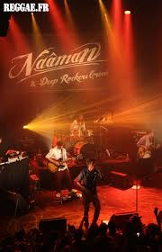
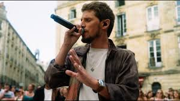
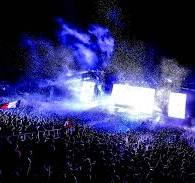
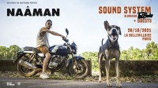

EVENEMENTS
Concerts / Enregistrements live

Live à La Cigale📅 Sorti en 2016 (enregistré lors d’un concert)
➤ Un enregistrement puissant de son énergie sur scène.
 Live at Reggae Sun Ska
Live at Reggae Sun Ska
📅 Sorti en 2018 (enregistré lors du festival Reggae Sun Ska)
➤ Captures de performances live avec une ambiance de festival.

Live Sessions (YouTube series)📅 Diverses sessions enregistrées entre 2015 et 2020 ➤ Performances acoustiques et live de plusieurs de ses titres populaires.

Live at Festival des Vieilles Charrues📅 Sorti en 2016 (enregistré lors du festival des Vieilles Charrues)
➤ Un autre enregistrement de festival montrant son interaction avec le public.
📅 Sorti en 2019 (enregistré lors du festival Rototom Sunsplash)
➤ Un autre enregistrement de festival montrant son interaction avec le public.
📅 Sorti en 2021
➤ Un projet live collaboratif avec le groupe Dub Inc, mélangeant leurs styles.

Live at La Bellevilloise📅 Sorti en 2023 (enregistré lors d’un concert à La Bellevilloise)
➤ Un enregistrement intime capturant l’essence de ses performances live.

 Unplugged (Live acoustic EP)
Unplugged (Live acoustic EP)
📅 Non daté précisément, vers 2014
➤ Versions acoustiques de certains titres phares.